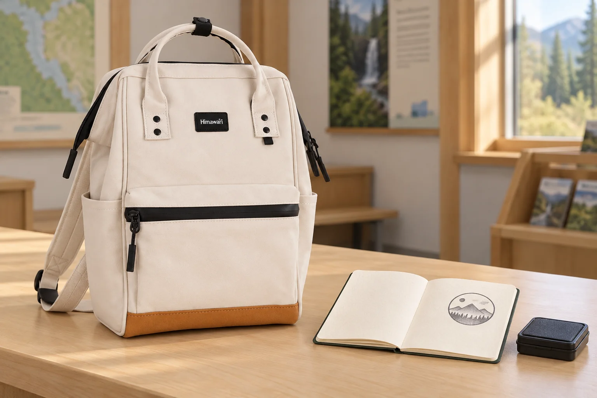

스탬프 기록장을 백팩에 넣기 전: 찍은 페이지는 잠깐 펼쳐두기

안내소에서 기록장을 펼치고 방문 스탬프를 찍었습니다. 도장을 돌려놓자마자 노트를 덮어 백팩에 넣고 싶지만, 방금 찍은 면은 아직 다음 장과 맞닿지 않았습니다. 여행 중 자기 노트에 남기는 이 흔적은 보내는 엽서와 달리, 다음 방문 때 다시 펼칠 페이지가 됩니다.
찍기 전에 다음 장까지 살펴봅니다
기록장에 빈자리가 있는지 확인하고, 안내된 도장을 어느 면에 찍을지 먼저 정합니다. 종이의 앞뒤가 얇거나 이전 기록이 가까우면 넓은 여백부터 살펴보세요. 이미 채운 면 위에 겹쳐 찍은 뒤 가방 속에서 어떻게든 정리하려 하지 않습니다. 현장에 별도 시험용 종이가 있다면 이용 안내에 따라 사용하고, 비치된 잉크패드는 쓰고 나서 원래 자리로 돌려놓습니다.
몇 분이면 된다고 정하지 않습니다
잉크가 마르는 시간은 종이와 잉크 종류, 주변 상태에 따라 달라질 수 있습니다. Tsukineko의 잉크 제품 안내도 건조 시간이 소재와 기후 조건에 따라 달라진다고 설명합니다. 해당 제품의 안내를 방문 스탬프 전체에 같은 시간으로 적용하지 말고 현장 안내와 기록장의 종이 특성을 기준으로 살펴보세요. 찍은 면을 손가락으로 문질러 확인하거나 급하게 가방 위에 눌러놓지 않습니다.
닫을 때는 표시 끈의 위치도 봅니다
노트를 잠깐 펼쳐두었다가 닫을 때, 방금 찍은 면 위에 책갈피 끈이나 두꺼운 표식이 얹혀 있지 않은지 봅니다. 여유 있게 마르는 과정을 기다린 뒤 자연스럽게 닫으세요. 방문 날짜나 짧은 감상은 인쇄된 흔적을 가리지 않는 여백에 남깁니다. 아직 기다려야 하는 기록장을 담기 위해 이동 동선을 서두르기보다, 안내소 이용 시간을 고려해 한곳에서 정리를 마치는 편이 좋습니다.
No.124S와 기록장의 크기는 따로 확인합니다
사진의 No.124S는 카탈로그 기준 가로 22 × 세로 33 × 폭 14cm입니다. 아이보리 몸체와 아래쪽 갈색 배색, 검정 지퍼와 앞주머니를 실제 원본에 맞춰 표현했습니다. 열린 기록장은 가방 옆에 별도로 둔 소품입니다. 외부 치수만으로 기록장의 수납을 단정하지 말고, 노트를 닫은 크기와 사용하는 케이스, 실제 가방 입구를 함께 확인하세요.
참고·안내
- Himawari No.124S 제품 정보
- 실제 Himawari No.124S 원본을 참조한 AI 연출 사진입니다. 기록장과 스탬프 용품은 별도 소품이며 실제 방문 기록을 뜻하지 않습니다.
자주 묻는 질문
스탬프를 찍고 몇 분 뒤에 노트를 닫으면 되나요?
잉크와 종이, 주변 조건에 따라 달라집니다. 정해진 시간을 모든 스탬프에 적용하지 말고 현장 안내와 잉크 상태를 살펴보세요.
사진의 스탬프는 실제 여행지 방문 인증인가요?
사진 속 기록장과 스탬프는 AI 연출을 위한 별도 소품입니다. 실제 방문 인증이나 공식 스탬프를 나타내지 않습니다.